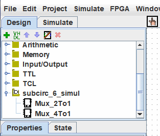

上一节: 调试子电路
Logisim-evolution 库
每个 Logisim-evolution 项目自动都是一个可以加载到其他 Logisim 项目中的库：只需将其保存到文件中，然后使用菜单 | Project |→ 在另一个项目中加载该库→ | 加载库 |→| logisim-evolution 库... |。 第一个项目中定义的所有电路都将可用作第二个项目的子电路。 此功能允许您跨项目重用通用组件，并与您的朋友（或学生）共享最喜欢的组件。
下面的导航面板中提供了作为库加载的项目。

注意： 库中不得包含与项目中已存在的电路同名的电路。
每个项目都有一个指定的main circuit，可以通过菜单| Project |→| Set As Main Circuit |。 其only 意义在于，主电路是您第一次打开项目时显示的电路。 新创建的文件中电路的默认名称（“main”）根本没有任何意义，您可以随意删除或重命名该电路。
通过加载的 Logisim-evolution 库，您可以查看电路并操作其状态，但 Logisim-evolution 将阻止您更改电路的设计和文件中存储的其他数据。
如果您想更改已加载 Logisim-evolution 库中的电路，则需要在 Logisim-evolution 中单独打开它。 一旦保存，其他项目应该立即自动加载修改后的版本； 但如果没有，您可以right-click 资源管理器窗格中的库文件夹，然后选择| Reload Library |。
返回: 子电路.